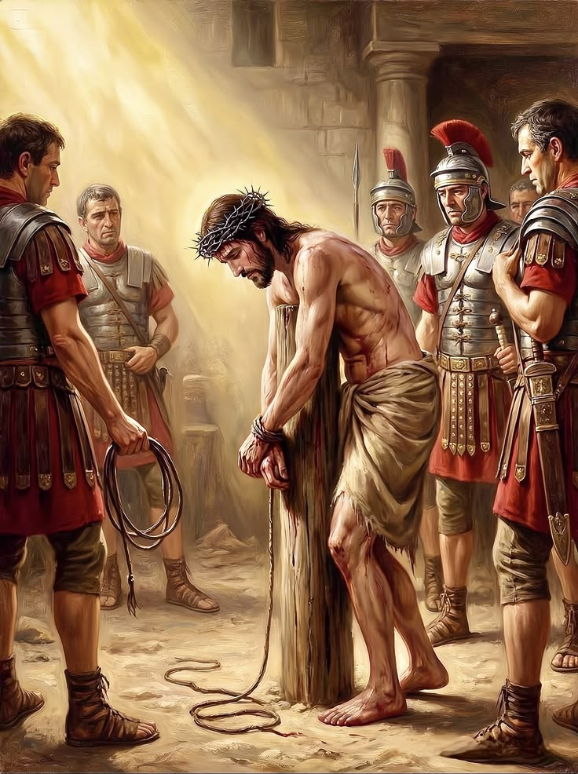
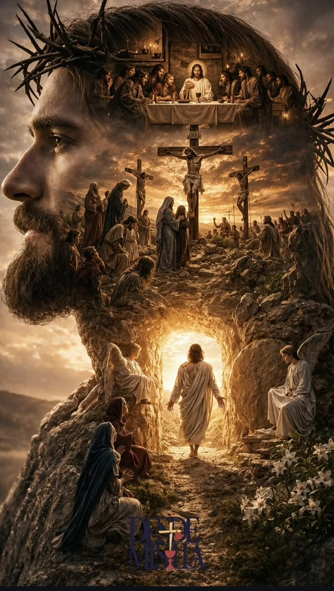

Le Chemin de Croix (ou Via Crucis) est une méditation profonde qui retrace les dernières heures de Jésus-Christ, depuis sa condamnation à mort jusqu'à sa mise au tombeau. C'est un parcours de foi et de recueillement spirituel qui invite chaque croyant à accompagner le Christ dans son sacrifice d'amour pour l'humanité.

Ce site web a été conçu pour offrir un espace numérique de prière, de réflexion et de partage. Que ce soit pendant le Carême ou tout au long de l'année, notre objectif est de vous guider à travers les différentes stations pour raviver l'espérance, la paix et la communion spirituelle où que vous soyez.
